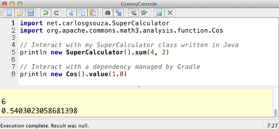

gradle-console
This plugin for Gradle allows you to easily interact with your Groovy and Java applications using the Groovy Console.

Just run gradle console and you will get a console window with all your runtime dependencies loaded for you. This is useful in case you need to interact your project dependencies or your source code in a fast and flexible way.
Installation
Add one of the following snippets to your build.gradle file according to the version of Gradle you are using:
Gradle >= 2.1
plugins {
id "net.carlosgsouza.console" version "1.0.1"
}Gradle < 2.1
buildscript {
repositories {
jcenter()
}
dependencies {
classpath group: 'net.carlosgsouza', name: 'gradle-console', version: '1.0.1'
}
}
apply plugin: 'console'Usage
Invoke the console task using gradle
gradle console
About this project
This is still an young plugin and I am counting on your feedback to make it better! Don't hesitate to send me an e-mail, create an issue on GitHub or, even better, submit a pull request.
Acknowledgement
This plugin was created based on this post by Mike Hugo. Thanks, Mike!